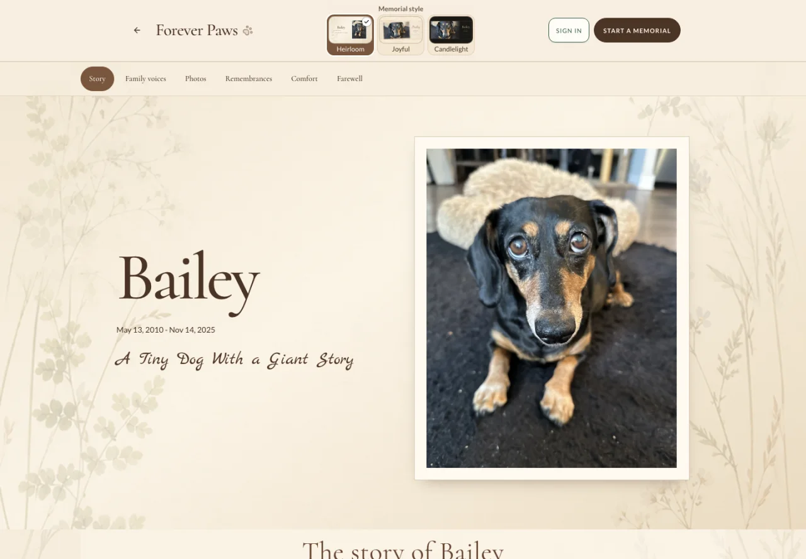
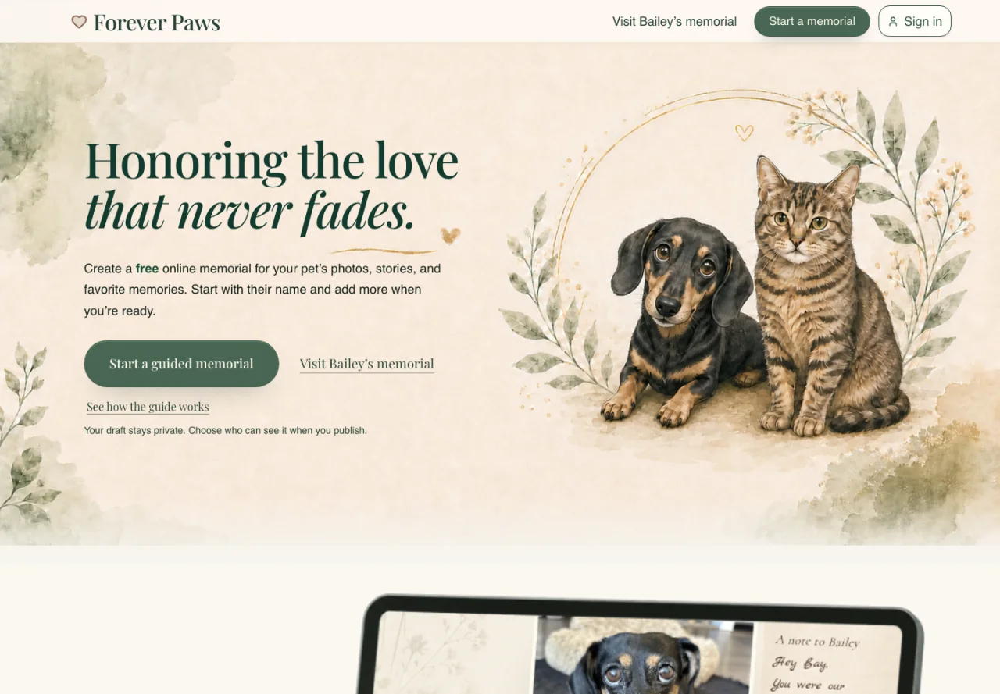

01What I built
I built a guided flow for creating a pet memorial and presenting photos and memories together on a dedicated page.
02What it enables
Visitors can explore the finished experience through Bailey’s public memorial.
03Tools & methods
